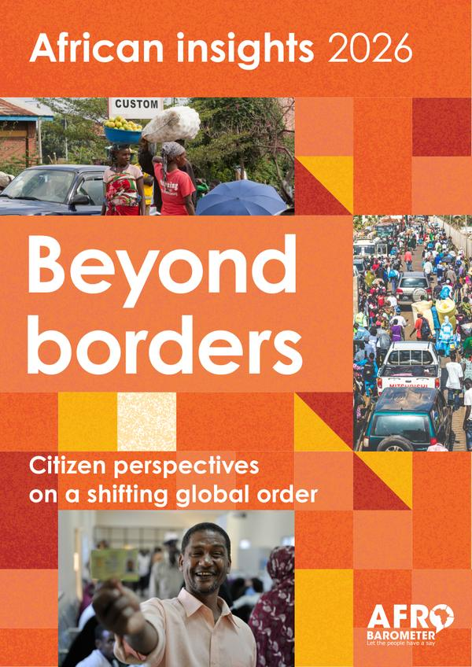
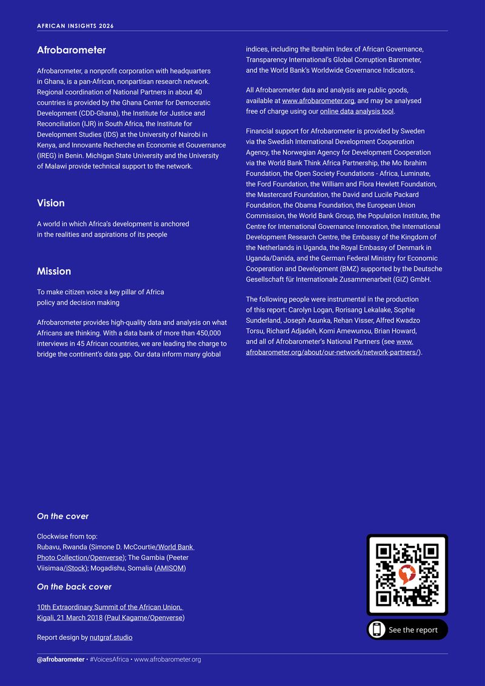
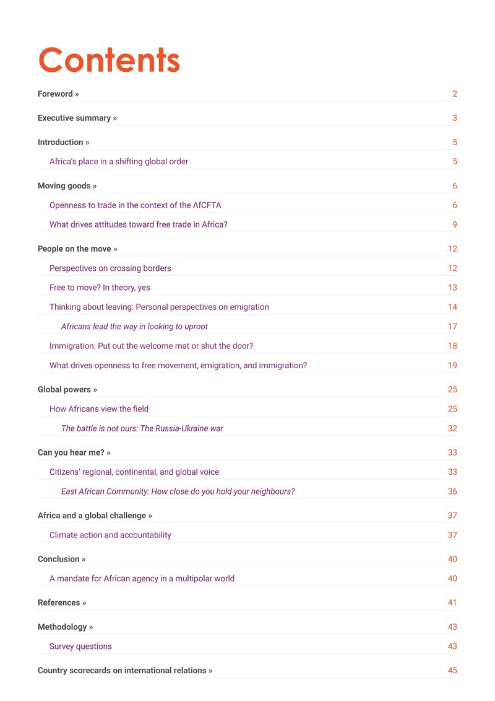
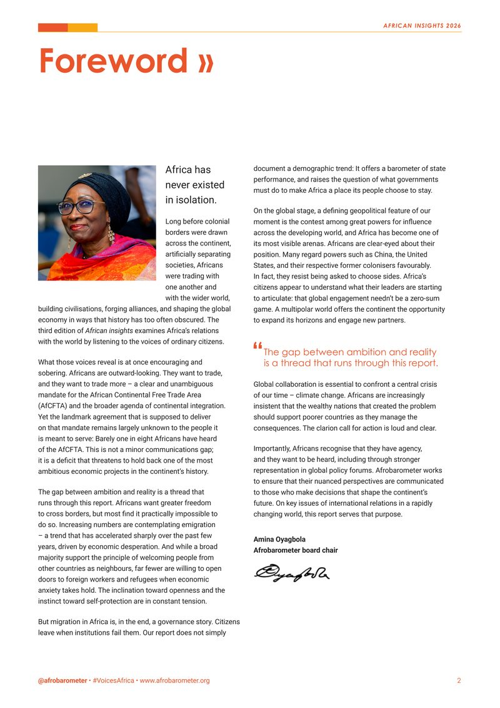
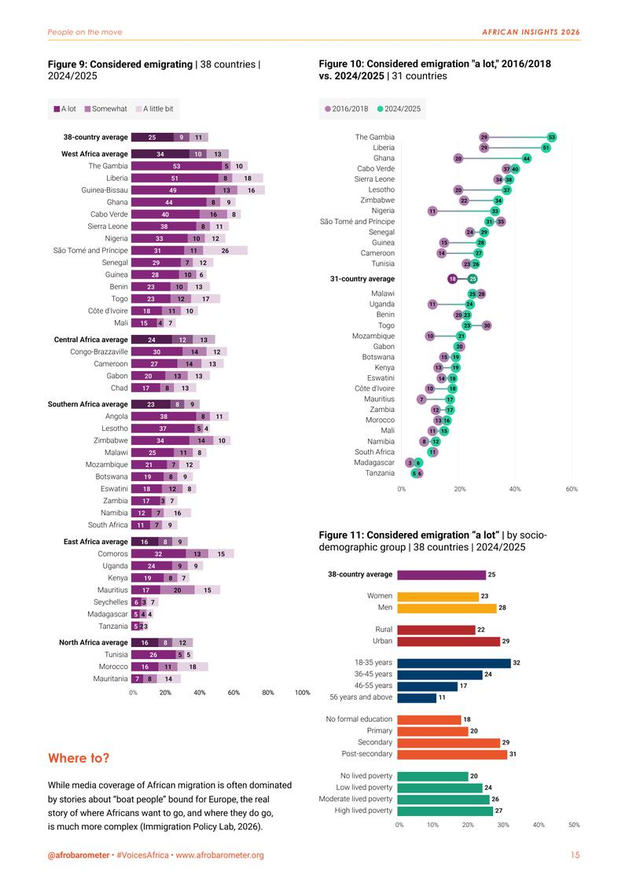
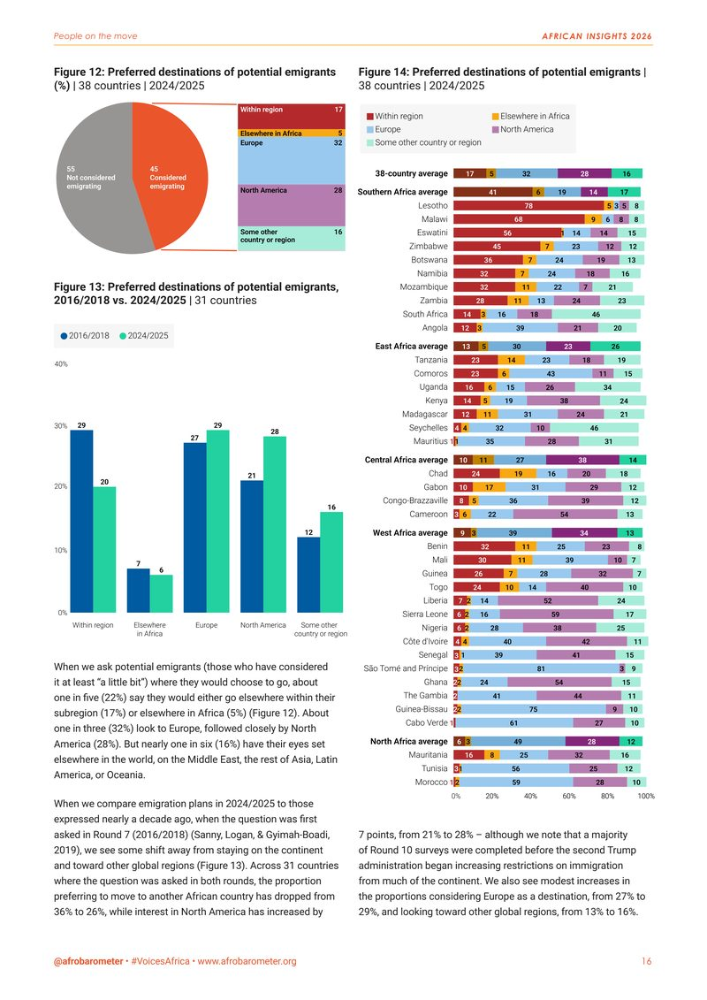
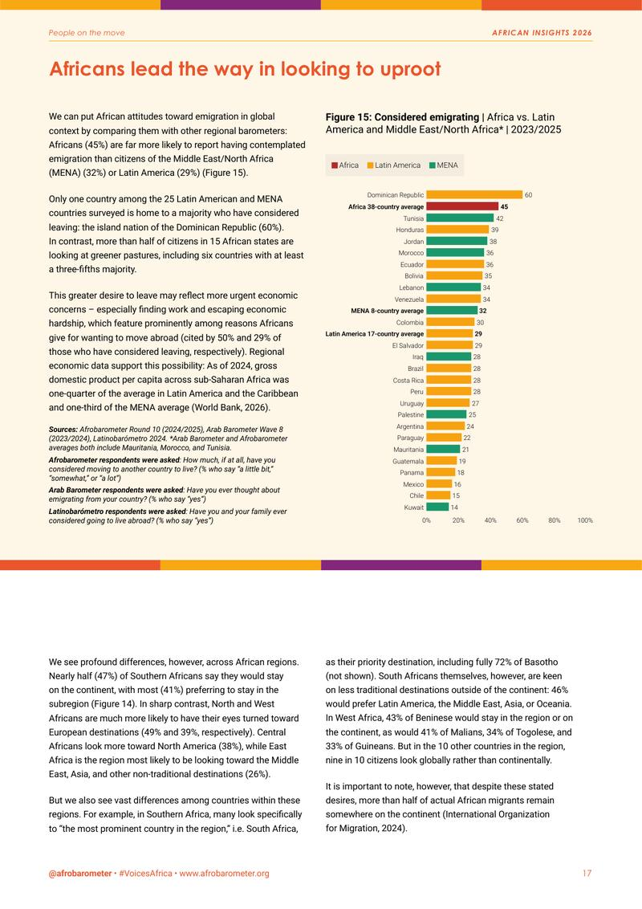
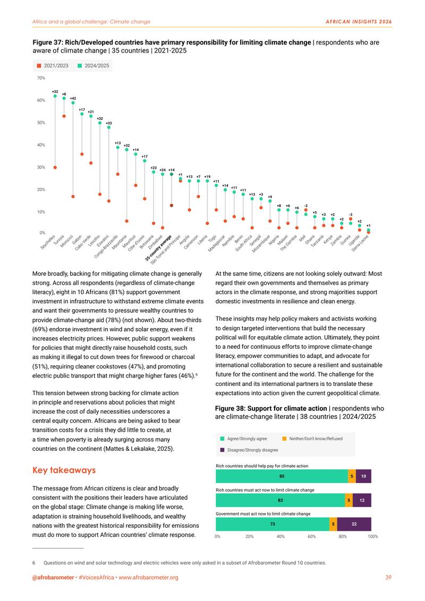
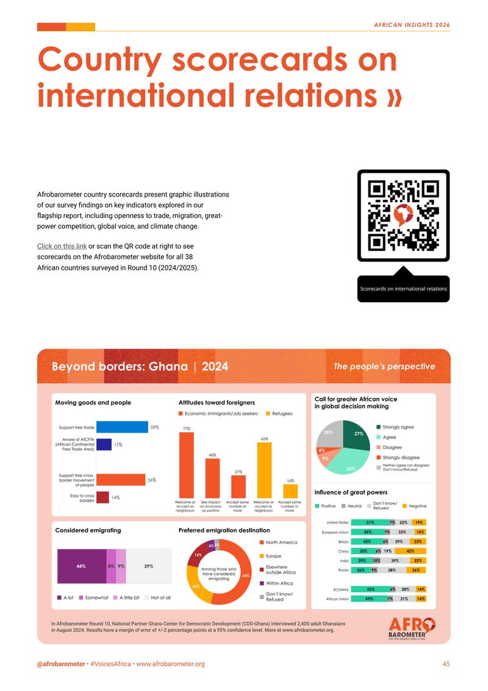
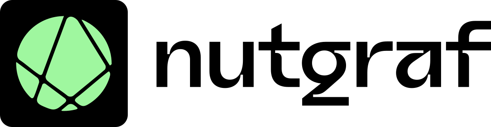

Beyond borders
African insights 2026. Citizen perspectives on a shifting global order.
Afrobarometer’s flagship report for 2026 asks how Africans see a world in flux: free trade under the AfCFTA, migration, the great powers, the continent’s voice in global institutions and climate action. Survey data from 38 countries, carried by 38 figures and 4 tables in a single chart system, from a 38-country heatmap to one-page country scorecards.
From the colophon: Report design by nutgraf.studio
- Pages
- 48in English
- Figures
- 38plus 4 tables
- Countries
- 38Round 10 survey, 2024/2025
- Data
- Face-to-face interviews, nationally representative samples
- Our role
- Report design: editorial design, data visualisation and infographics
- Client
- Afrobarometer, pan-African research network
-

Open the cover at reading sizeBeyond borders The cover
-

Open at reading size:Beyond borders Inside cover and colophon
-

Open at reading size:Beyond borders The contents
-

Open at reading size:Beyond borders The foreword
-

Open at reading size:Beyond borders Who is thinking of leaving
-

Open at reading size:Beyond borders Where they would go
-

Open at reading size:Beyond borders Africa against two other regions
-

Open at reading size:Beyond borders Who should act on climate
-

Open at reading size:Beyond borders One country on one page

We make your data impossible to ignore.
hello@nutgraf.studio
Inside cover and colophon The contents The foreword Who is thinking of leaving (rebuilt as a live chart below) Where they would go Africa against two other regions Who should act on climate One country on one page